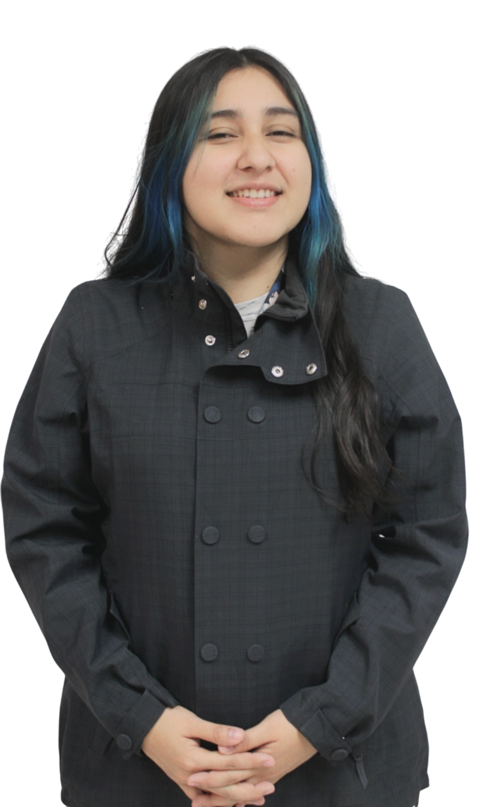

Soy Rebeca, estudiante de Diseño Gráfico Web Multimedia en la Universidad Francisco Gavidia.
En este portafolio presento mi estilo, mi identidad y mi visión creativa, con un enfoque en el área multimedia, explorando recursos audiovisuales e interactivos que transmiten ideas de forma dinámica y atractiva, y a su vez integrando el área web con propuestas funcionales e intuitivas.
De esta experiencia surge Reko, mi marca personal, inspirada en la historia del pez koi que, con esfuerzo y perseverancia, logra transformarse en dragón. Ese significado representa mi propio proceso de crecimiento, superación y evolución dentro del diseño web multimedia, proyectando cada proyecto como un paso más en esa transformación.

Proyectos
"Como el koi que nada contra la corriente y se transforma en dragón, cada proyecto es un viaje de crecimiento y superación"